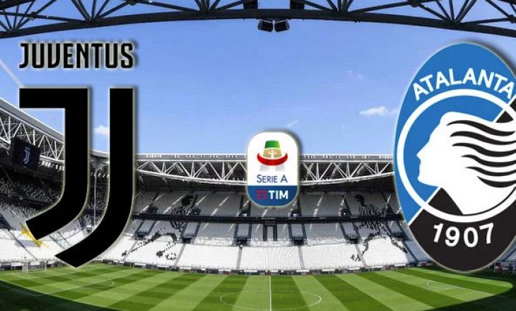
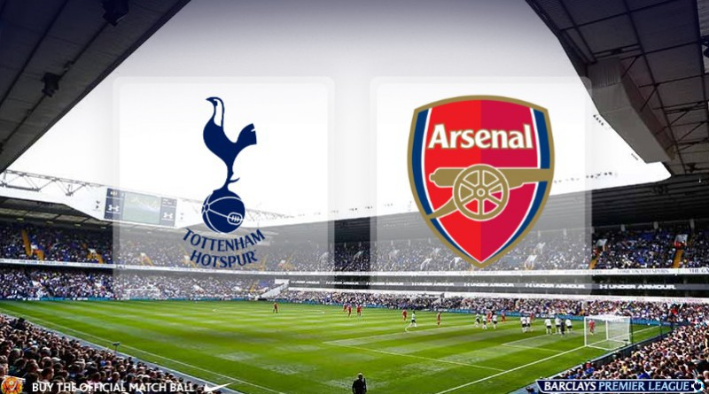

Сегодня разберем 3 интересных предстоящих события в мире футбола!


ЮВЕНТУС - АТАЛАНТА
В субботу 11.07 сойдутся в битве два лидера итальянской лиги
Ювентус и Аталанта. После вынужденной паузы Ювентус показывает
себя хорошо в играх соперниками нижней части турнирной таблицы.
Неожиданнным оказалось поражение от Милана 4 : 2. Но не стоит считать,
что "Старая сеньора" расслабилась раньше времени скорее "Россонери"
показывают какую-то невероятную игру. У Аталанты был более интересный
график после вынужденной паузы. Победа над Лацио 3 : 2 и Наполи 2 : 0,
а так же тот факт, что "Оробичи" не упустили ни одной возможности набрать
очки наталкивает на мысль, что Ювентусу придется непросто. Перейдем к
статистике. Аталантав в среднем за матч получает 2 желтые карточки
и подает минимум 3 угловых. Что касается "Юве", то у них 3 карточки
и 5 угловых. Так же у "Оробичей" есть любтели лонгшотов, поэтому бьют
из-за пределов штрафной они чаще всех в лиге. В среднем 6 ударов за матч.
Хоть и все букмекерские конторы считают "Старую сеньору" явным фаворитом,
Аталанта готова побеждать и забивать.

АРСЕНАЛ - ТОТТЕНХЭМ
Лондонское дерби на «Эмирейтс» станет главным событием
в четвертом туре АПЛ. Мы предлагаем заранее подготовиться и изучить наш прогноз
на матч Тоттенхэм – Арсенал. В расстроенных чувствах к очной битве подходят
обе команды. И если поражение «канониров» от Ливерпуля не удивило даже Уная Эмери,
то «шпоры» знатно опростоволосились, проиграв дома Ньюкаслу. Ну хоть как-то оправдал
себя 45-миллионный Жоэлинтон – на его счету единственный мяч «сорок».
Изучим первые два матча в исполнении «канониров» и «шпор», чтобы выдать прогноз
на Тоттенхэм – Арсенал.
Разница мячей у лондонских команд похожа. Арсенал забил 4 и пропустил 4,
Тоттенхэм с положительным балансом 5:4 находится на три строчки ниже.
Однако тотал в 2,5 гола лондонские команды не пробили всего по разу,
ещё и с одним соперником – Ньюкаслом. С сильным соперником (в том числе между собой)
они не играют скучно. В матче Тоттенхэм – Арсенал прогноз на 25 апреля вырисовывается четко:
тотал больше 2,5. Коэффициент не самый солидный, зато вероятность прохода ставки очень высокая.
Команды усилили атаку, в новом сезоне 4 раза из шести пробили нужный тотал. Статистика помогла составить
прогноз на Тоттенхэм – Арсенал.
«Шпоры» и «канониры» слишком равны в очных поединках, чтобы обращать внимание на исход, выбирая ставки на матч.
За последние десять встреч – 4 ничьих и по три победы каждой команды. Матч Тоттенхэм – Арсенал 25.04 вновь будет
на три результата. Усиливают ситуацию поражения в последнем туре, нужно оправдываться перед болельщиками.
Правда, в день знаний это не смогут сделать обе лондонские команды. Победитель нам и не важен. Главное,
что есть предпосылки к голевой перестрелке.